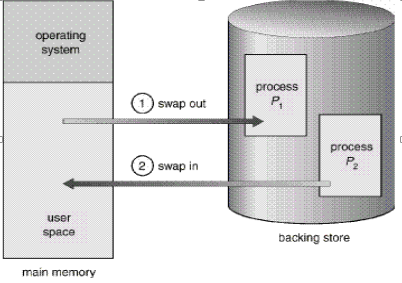
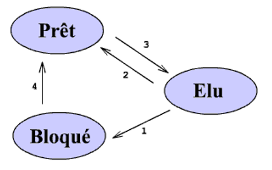
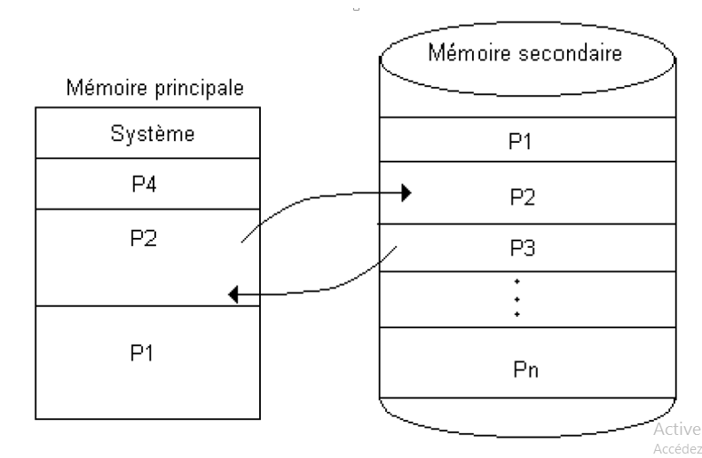

La stratégie appelée va-et-vient (swap) ,consiste à considérer chaque processus dans son intégralité: en cas de réquisition du processeur, le programme en cours doit être sauvegardé sur disque avant le chargement en mémoire principale de son successeur, dans sa totalité, pour exécution.
Les processus, puisqu'ils sont concurrents et doivent se partager le processeur, ne peuvent être continuellement actifs. Ils ont donc, si on ne considère pour commencer que l'ordonnancement à court terme, trois niveaux fondamentaux et quatre transitions possibles. 
Elu signifie en cours d'exécution. L'exécution n'est interrompue que par les conditions suivantes :
Transition 1 : Le processus se bloque, faute de données pour l'alimenter ou en attendant une opération d'entrée/sortie.
Transition 2 : Le processus est interrompu soit parce que la tranche de temps qui lui est impartie est achevée soit parce qu'un processus de plus haute priorité réquisitionne le processeur.
L'état Prêt est un état provisoire pour permettre aux autres processus de s'exécuter quasi simultanément.
L'état Bloqué est un état d'attente d'un événement extérieur, tel qu'une entrée/sortie, nécessaire à la poursuite de l'exécution du processus.
Ajoutons deux états qui correspondent à l'ordonnancement à long terme : les états " Nouveau " et " Terminé ".
En informatique, le mécanisme de mémoire virtuelle a été mis au point dans les années 1960. Il repose sur l'utilisation de traduction à la volée des adresses (virtuelles) vues du logiciel, en adresses physiques de mémoire vive. La mémoire virtuelle permet :
• d'utiliser de la mémoire de masse comme extension de la mémoire vive ;
• d'augmenter le taux de multiprogrammation ;
• de mettre en place des mécanismes de protection de la mémoire ;
• de partager la mémoire entre processus.
Chargement du processus de la mémoire vers le disque .
Chargement du processus du disque vers la mémoire
Le disque dur externe est un disque dur conventionnel embarqué dans un boitier solide facilement transportable qui se connecte à un ordinateur en USB. Le but est de pouvoir transporter un très grand nombre de données ou faire une sauvegarde complète de son ordinateur pour protéger ses données. Le disque dur externe est utile si une clé USB ne suffit pas, car le disque dur a une bien plus grande capacité, jusqu'à plusieurs To (Téra Octets soit des milliers de Go).
1.Sauvegarde du programme du processus en cours (processus actif) en mémoire secondaire (M.S).
2.Chargement du programme du processus élu, Un programme est chargé, entièrement, en M.C. avant de commencer son exécution
Tous processus interrompu par une instruction d’entrée sortie est chargé dans le disque en lassant sa place pour un autre processus.
Processeur inutilisé pendant les transferts de programmes et les entrées/sorties.